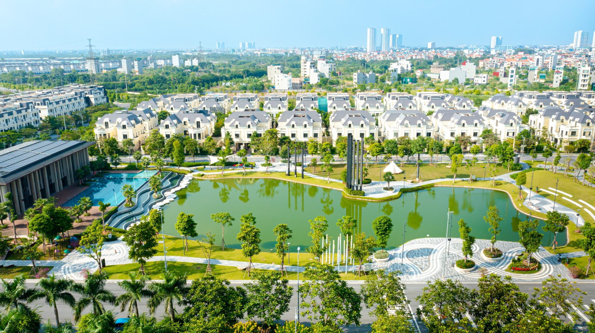
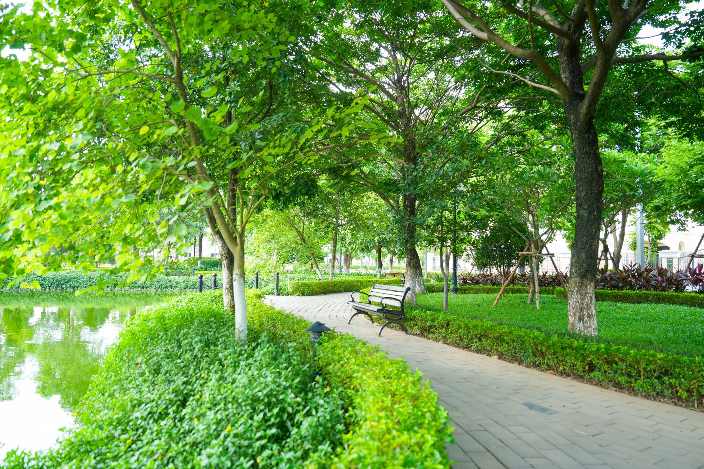
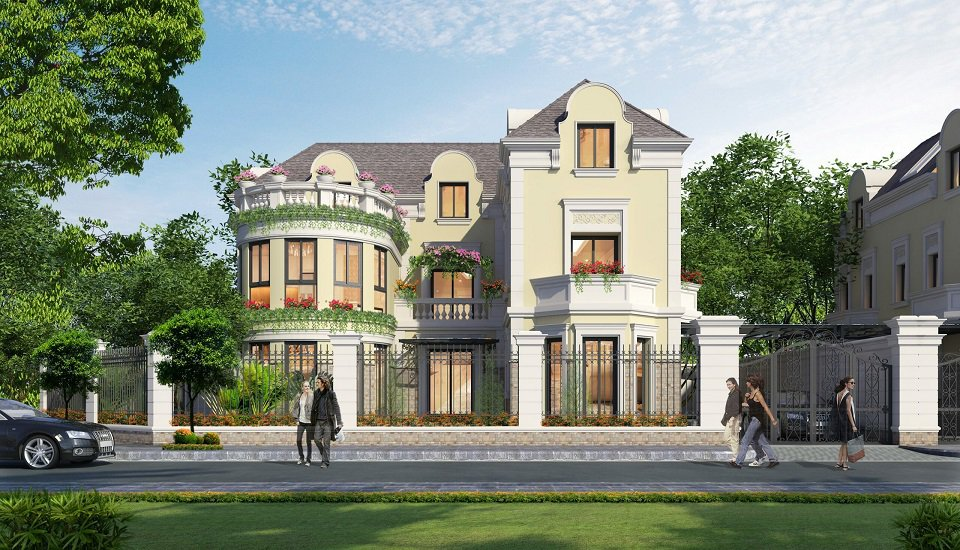

ANLAC GREEN SYMPHONY · HÀ NỘI
Trở về xanh.
Sống an lành.
Một khoảng lặng giữa nhịp sống phía Tây Hà Nội.
Khám phá tổ ấm bên cảnh quan xanh và kiến trúc tân cổ điển.
01 / TỔNG QUAN
Khi thiên nhiên
trở thành một phần của nhà.
Anlac Green Symphony kết hợp kiến trúc tân cổ điển với cảnh quan cây xanh và mặt nước. Một gợi mở cho gia đình đang tìm kiếm không gian sống tại phía Tây Hà Nội.
Đi tìm nhịp sống của bạn ↗Quy mô giai đoạn I
Mật độ xây dựng
Cây xanh, mặt nước & hạ tầng kỹ thuật
Đơn vị đầu tư theo nguồn dự án
Thông số theo website dự án, tham khảo ngày 04/11/2026.

HÌNH ẢNH TỪ WEBSITE DỰ ÁN02 / NHỊP SỐNG XANH
Thêm khoảng xanh.
Thêm thời gian cho mình.
Buổi sáng bắt đầu bằng một vòng dạo bộ. Buổi chiều dành cho những cuộc trò chuyện bên hồ. Hãy hình dung một nhịp sống có chỗ cho cả kết nối lẫn riêng tư.
Cảnh quan & mặt nước
Khám phá đường dạo, hồ cảnh quan và những khoảng xanh qua hình ảnh dự án.
Kiến trúc có bản sắc
Ngôn ngữ tân cổ điển hiện diện trong các dòng nhà ở thấp tầng.
Không gian cho gia đình
Đánh giá công năng và môi trường xung quanh theo nhu cầu của từng thành viên.
03 / BỘ SƯU TẬP KHÔNG GIAN SỐNG
Mỗi tổ ấm,
một dấu ấn riêng.
Từ không gian riêng tư đến nhịp phố kết nối.
Chọn loại hình để tìm hiểu phù hợp với bạn.

PHỐI CẢNH THAM KHẢOBiệt thự
Dành không gian cho những điều quan trọng: gia đình, sự riêng tư và cách sống của riêng bạn.
- Loại hình
- Đơn lập & song lập
- Phong cách
- Tân cổ điển
- Thông tin từng căn
- Xác nhận khi tư vấn
Hình ảnh tham khảo từ nguồn được cung cấp; thiết kế, diện tích và tình trạng từng sản phẩm cần được xác nhận.
04 / VỊ TRÍ & KẾT NỐI
Ở phía Tây Hà Nội.
Kết nối nhịp thành phố.
Dự án được giới thiệu tại Sơn Đồng, Hà Nội, kết nối khu vực Mỹ Đình qua các trục đường 70 và Vành đai 3.5.
- 01 Khu vực Mỹ Đình
- 02 Trục đường 70
- 03 Trục Vành đai 3.5
Sơ đồ kết nối mang tính tham khảo. Kiểm tra tuyến đường và tình trạng giao thông trước khi di chuyển.
05 / GÓC NHÌN DỰ ÁN
Cảm nhận bằng hình ảnh.
Ảnh từ các website được cung cấp, không đại diện cho tình trạng bàn giao của từng căn. Xem website nguồn để cập nhật.
06 / THÔNG TIN HỮU ÍCH
Trước khi bạn
đưa ra lựa chọn.
Dự án có những loại hình nào?
Website dự án giới thiệu biệt thự đơn lập, biệt thự song lập, nhà liền kề, shophouse và căn hộ. Tình trạng sản phẩm cần được kiểm tra tại thời điểm bạn tìm hiểu.
Làm thế nào để biết giá và diện tích chính xác?
Giá, diện tích và chính sách phụ thuộc từng sản phẩm. Hãy ghi rõ loại hình quan tâm trong yêu cầu tư vấn để nhận thông tin tương ứng; trang này không công bố bảng giá chưa được xác nhận.
Có thể xem thực tế trước khi quyết định không?
Bạn có thể đề nghị lịch tham quan trong email. Lịch chỉ được xác nhận sau khi đơn vị tiếp nhận phản hồi và thống nhất với bạn.
Thông tin và hình ảnh được lấy từ đâu?
Nội dung được tổng hợp từ hai website bạn cung cấp, tham khảo ngày 04/11/2026. Số liệu tổng quan sử dụng phạm vi giai đoạn I từ anlacgreensymphony.vn. Hình phối cảnh được ghi nhãn riêng.
BẮT ĐẦU HÀNH TRÌNH CỦA BẠN
Tổ ấm phù hợp
bắt đầu từ
một cuộc trò chuyện.
Chia sẻ loại hình bạn quan tâm và điều bạn đang tìm kiếm. Soạn yêu cầu để trao đổi thêm với địa chỉ liên hệ công bố trên website dự án.